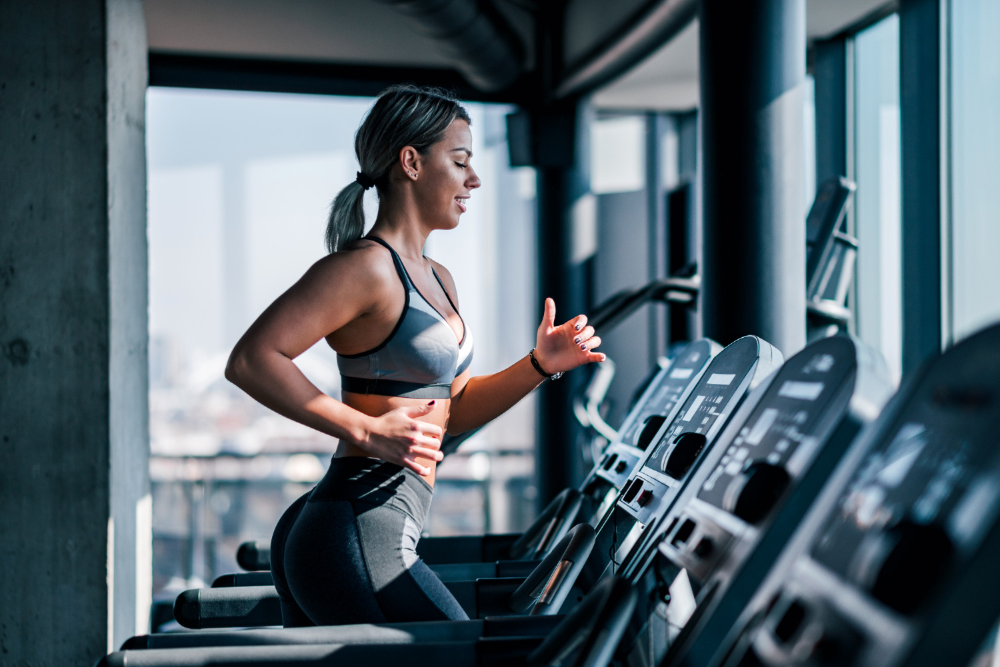

Experience Design
/עיצוב חוויה
עיצוב חוויה הוא תחום מתפתח המתמקד ביציאת אינטרקאציות משמעותיות ומהנות בין המשתמש למוצר או לשירות. בעיצוב חוויה אנחנו שואפים ליצור אינטארקציות חיוביות ומהנות, שמתעלות מעבר לרק פונקציונאליות. אנחנו לוקחים בחשבון את כל המסע שעובר המשתמש, ושואפים לספק חוויות שהן לא סתם ידידותיות למשתמש, אלא בעלות אימפקט רגשי של ממש. גללו למטה להצגת כל התחומים או בחרו תחום מהרשימה:
-
בתחום הרכב
בעולם המכוניות עיצוב חווית הנהיגה מהווה חלק מרכזי בתכנון ובניית הרכב. רכב שנוסע טוב כבר לא יספק כל נהג, והחוויה היא המפתח להצלחה. לוחות מחוונים ארגונומיים ואינטואיטיביים, כפתורי בקרה נוחים וברורית ואחסון הממוקם במקומות אסטרטגיים כולם תורמים לחוויית נהיגה משודרגת ומהנה.
-
בתחום הקמעונאות
בעולם של תחרות הולכת וגוברת, חנויות רבות מחפשות דרכים חדשות וייחודיות למשוך לקוחות ולעודד אותם לקנות. מעבר למחירים אטרקטיביים ומבצעים מיוחדים, חנויות רבות משקיעות ביצירת חווית קנייה ייחודית שתגרום ללקוחות לחזור שוב ושוב. חוויית קנייה ייחודית יכולה להתחיל כבר מהרגע הראשון שבו הלקוח נכנס לחנות. עיצוב מיוחד, תאורה נעימה, מוזיקה נכונה ואווירה נעימה יכולים לתרום רבות לחוויה חיובית.
-

בתחום הפיטנס
חווית משתמש טובה במכשירי ספורט חשובה לאימון יעיל ומהנה. היא מתבטאת בממשק פשוט ואינטואיטיבי, התאמה אישית, עיצוב נוח, משוב ברור ומעודד, תוכניות מגוונות ומרתקות, ואינטגרציה עם טכנולוגיה .חווית משתמש שלילית תגרום לכם להימנע מהמכשיר, וחוויה טובה תעודד אתכם להשתמש בו שוב ושוב.
-
בתחום הבית החכם
עוד תחום בו החוויה נמצאת במרכז היא עולם הבית החכם. חוויית טובה ומיוחדת במוצרי בית חכם חיונית להנאה, יעילות וקלות שימוש. בית חכם שעשוי בצורה ייחודית ויעילה מאפשר ליהנות מהפונקציות השונות, לחסוך זמן וטרחה, ולהפוך את הבית שלכם לחכם ונוח יותר. על מוצרים להיות אינטואיטיביים ,יעילים ומהנים לשימוש, נגישים לכולם ואמינים לאורך זמן.
-
בתחום המוזיאונים
בעולם המודרני, מקומות כמו מוזיאונים יכולים בקלות לאבד את הרלוונטיות שלהם ולהישאר מאחור. חשוב שמוזיאונים יציעו חוויה מיוחדת ומתקדמת שתגרום למבקרים להרגיש מעורבים, נרגשים ומונעים. ניתן ליצור חוויה ייחודית אותה באמצעות טכנולוגיות חדשות, תערוכות חדשניות, אירועים מיוחדים, עיצוב נעים ושירות אדיב. חוויה מיוחדת ומתקדמת היא חיונית להצלחת מוזיאון בעולם המודרני, והופכת את הביקור בו לחוויה בלתי נשכחת.
-
בתחום המסעדנות
בעולם הקולינריה התחרותי של היום, מסעדות רבות מתמקדות באיכות האוכל והשירות, אך על מנת להתבלט במגוון הענק שקיים עליהן ליצור חוויה מיוחדת ללקוחות שלהן. חוויה זו כוללת את כל האלמנטים שאינם קשורים ישירות לאוכל, כמו האווירה במסעדה, העיצוב, המוזיקה, התאורה וקונספט שובה ומיוחד.
-
בתחום הטכנולוגי
בעולם הטכנולוגי התחרותי של היום, חווית השימוש במוצר הפכה לגורם מכריע בהצלחתן של חברות ומוצרים. היצע עצום של מוצרים ושירותים טכנולוגיים גורם ללקוחות להיות בררנים וקלים למעבר למתחרה. ציפיות גבוהות לחוויות איכותיות וקלות לשימוש הן באפליקציות והן באתרי אינטרנט, הופכות את החוויה ליתרון תחרותי משמעותי. חוויה טובה כוללת ממשק קל לשימוש, עיצוב מושך, פונקציונליות יעילה, אמינות, ותמיכה זמינה. חברות רבות משקיעות משאבים רבים בשיפור החוויה ובמיקוד בעולם הלקוח.
-
בתחום ההופעות החיות
עיצוב חוויה בעולם ההופעות החיות הולך ונעשה חשוב יותר ויותר. הופעה מיוחדת שמתמקדת בחוויית הקהל יכולה להפוך עוד הופעה רגילה לאירוע בלתי נשכח. הדבר בא לידי ביטוי בעיצוב במה מיוחד, תאורה מחושבת, אינטראקטיביות עם הקהל, שימוש בD3 ובאביזרים שונים.
-
בתחום הרפואה
חוויית המשתמש משפיעה על הדרך בה אנשים משתמשים בשירותי הבריאות ויכולה להשפיע על התמודדותם עם תהליכי הטיפול. יותר ויותר נהיים פופולאריים יישומונים למעקב אחרי המצב הבריאותי ומכשור רפואי לביש. יצירת חוויה חיובית למטופל יכולה לסייע לו לנווט במערכת הבריאות, לקבל המלצות מבוססות התאמה אישית ועוד.
-
בתחום התחבורה הציבורית
חווית המשתמש בעולם התחבורה הציבורית מהווה את המפתח להצלחת השירות ושימוש מוגבר בתחבורה זו. בתחום זה, חוויה טובה משקפת את רמת הנגישות, הנוחות, הביטחון והיעילות של השירות. זהו הגורם המכריע בהקשר של בחירת תחבורה, שכן משתמשים רוצים להרגיש שהם מקבלים את הערך המירבי עבור כספם וזמנם. בנוסף, מידע ברור ותהליכי רכישה פשוטים משפרים את חווית המשתמש ומעודדים יותר נסיעות בתחבורה הציבורית.